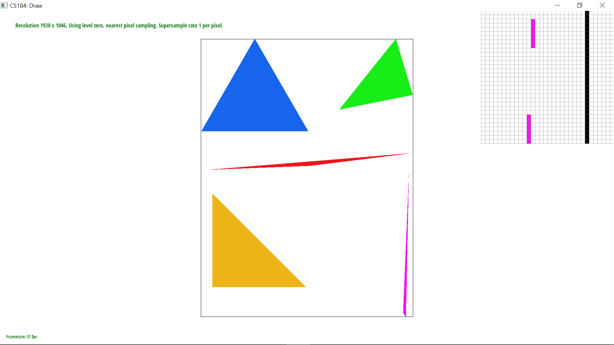
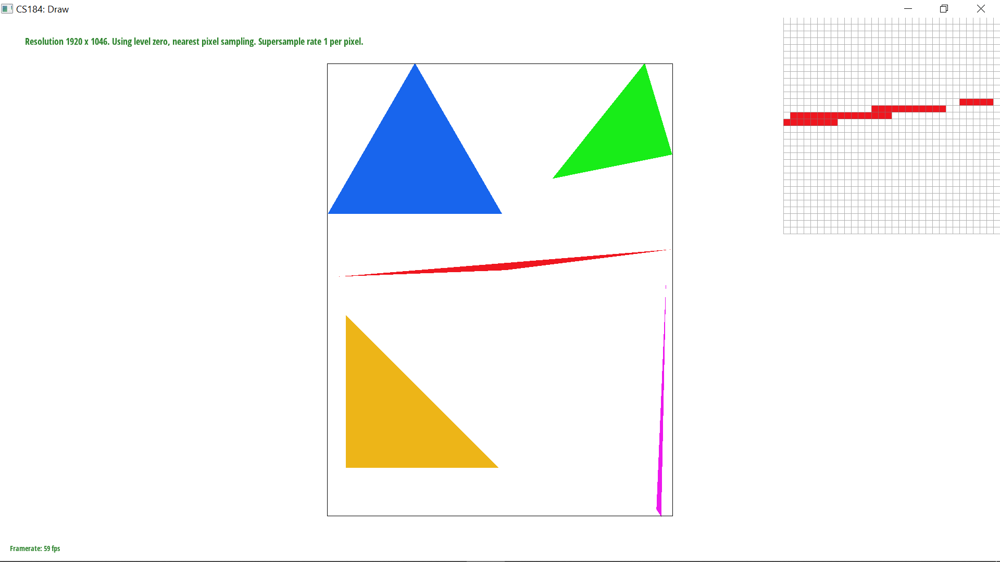
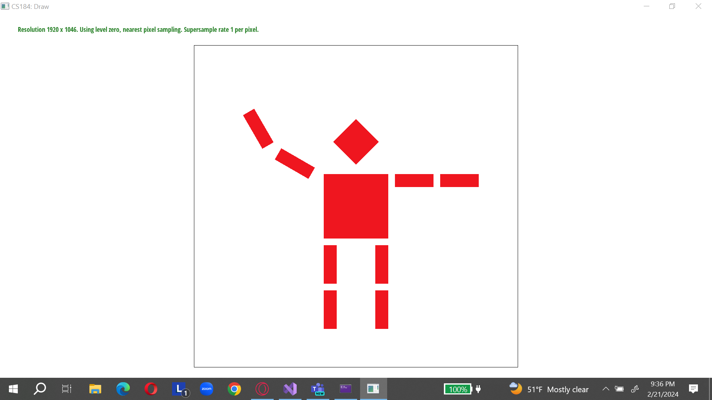
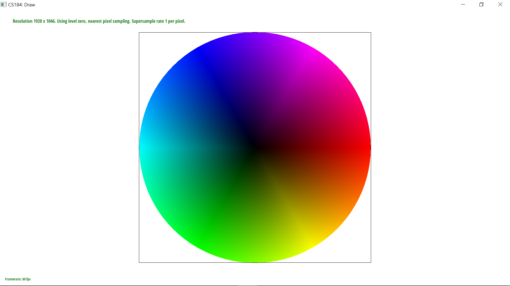
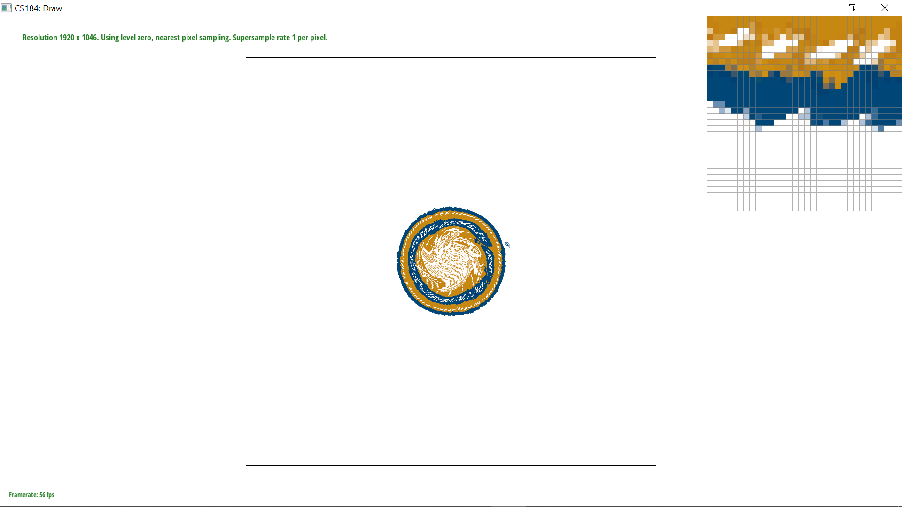
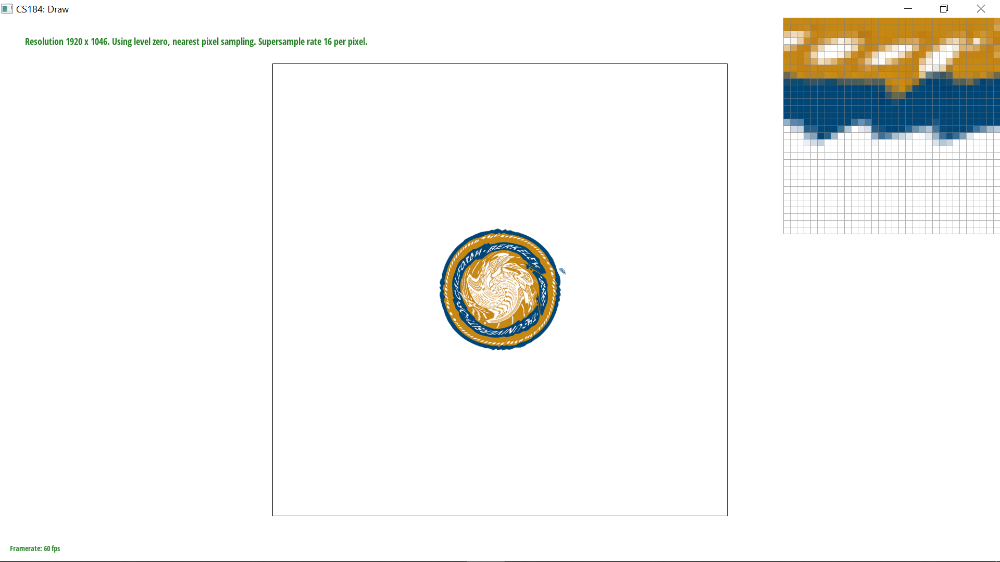
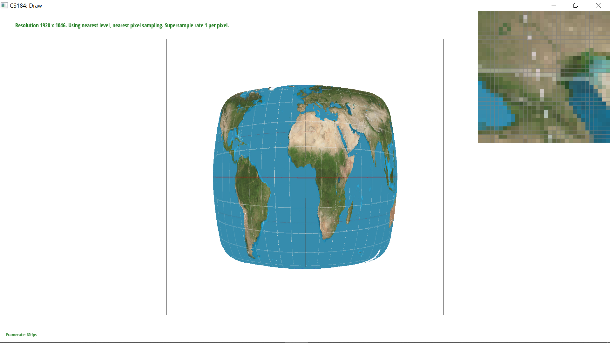

This project is about rasterizing, the process of going from an abstract definition of what an image should look like, such as shapes defined by the points of their verticies, as well as base images, into a combined frame that updates regularly. It will involve an exploration of pixel sampling, level sampling via mipmaps, texture mapping, and anti-aliasing methods like super sampling.
The process of rasterizing a triangle starts with identifying a bounding box around it. This means that we only need to search over a subset of the overall pixels, increasing efficiency compared with the approach of sampling over all pixels in the framebuffer. For each point, a simple test is done to conclude if it is or is not within the triangle. This test simply takes the cross product of the vector created between the points. For each edge of the triagle, one such cross product is computed, and in my implementation, all three must be positive, indicating that the point is correctly oriented with respect to all three of the vectors--being mathematically equivalent to being inside of the triangle, when this condition is met, the color specifies in the triangle's definition is written to the frame buffer.'
Looking at this set of rasterized triangles, we can see that this method works well in shading the triangles, but it creates jagged edgies known as "jaggies" which are visually unpleasing. The section highlighted by the pixel inspector shows how this is especially bad in the corners of skinny triangles. The next section will explain a method to eliminate these.
As show before, simple rasterizing creates unintented jagged edges. Conceptually, a way to get around this is to sample at a higher frequency to get a more fine-grained triangle (which will look nice but be in a resolution that is too high for the monitor) and then downsample it back to the correct resolution. Because the downsampling process averages nearby pixels, it converts the jagged edge into a smooth gradient that is much more visually pleasing. This is another way of saying that supersampling overcomes the problem of aliasing. Aliasing occurs when the sampling is at a frequency that is too low to capture the actual changes in the underlying function. In the case of the edge of the triangle, the 'true' frequency is a continuous edge, but because the sample rate of the monitor may be low (that is, the spacing between pixel centers), what we see looks more like a staircase step function. By using more samples, we capture higher frequency changes in the underlying function--this will still always be jagged but the problem is greatly reduced through this approach because it takes advantage of pixels that are a blurred color, rather than pixels being either on or off.
Computationally speaking, the approach I take to this is to do rasterization in an identical way as described above, with a framebuffer that at a resolution equal to the original screen resolution multiplied by the desired rate. The rate represents the number of pixels in this virtual frame buffer that will equate to one pixel in the actual display. Therefore, to accomplish this, I simply modify the frame buffer datastructure to store more color values, and then loop over all of these in the step of actual rasterization. I then downsample this framebuffer back down using averaging. I also modified the other (non triangle) rasterization functions to write into this modified frame buffer putting in a square of area sample_rate for every one pixel they would have written (for simple line and point rasterizers).
These images show the supersampling rate increasing from 1 to 4 to 16 respectively, and the effect of smoother edges can be clearly observed. Its important to note the engineering tradeoff underlying this antialiasing: both the memory and time complexity of rendering a traingle will be multipled by a factor of sample rate. To my eyes, sampling this at rate 1 is unacceptably poor quality, while rate 4 has moderate quality which is acceptable but offputting to look at. At the rate of 16, I can no longer see the jaggies at all!
Because primatives like lines and triangles are defined in terms of the points of the vertices, we can apply transform matrices directly to these points in order to augment rotate, scale, or translate a primitive as we wish. This is done using by storing the vertex value as a homogenous coordinate (x, y, 1) and then multiplating it by a homogenous transformation matrix, the upper left 2x2 portion of which corresponds to rotation and scaling, while the 2x1 portion at the top right corresponds to translation. Below is an illustration of an image composed of rectangles made to look like a robot who is waving.
Barycentric coordinates are a coordinate system that is used to decsribe where a point lies in a triangle with respect to the triangle's vertices. There are multiple ways to compute barycentric coordinates, and the general requirement is that the coordinates sum to 1, because this allows for interpolation, where the barycentric coordinates serve as weights for some quality of the triangle's vertices. For example, if each vertex has a color, then a smooth gradient between these colors can be achieved inside of the triangle.
I used a method of calculating the coordinates based on breaking the trinagle into three seperate areas defined by drawing lines between the inner point and the verticies. The barycentric coordinates are then just defined by taking the quotient of the repsect areas and normalizing such that they sum to 1.
Here I show an illustration of the use of barycentric coordinates to make a color wheel. The wheel is actually composed of many thin triangles serving as the 'slices of the pie'. Because of this interpolation, the colors seem to be transitioning smoothing across the wheel.
Texture mapping is the process of establishing correspondance between points in a texture image and the vertices of a primitive shape. Although the mapping between vertices and texture coordinates is given, barycentric interpolation is used as above to get a new coordinate within the texture. The issue is that this interpolated point will almost certainly be a decimal valued vector, and therefore, we have a design choice in how exactly we choose a pixel. One method involved selecting the pixel which is closest, and another involves averaging the four surrounding pixels using their distances as weights. The former is simpler and faster, yet the latter gives a more accurate rendering of the texture. Below is a comparison of these two methods, as well as a comparison at different sampling rates.
 The twisted Cal logo appears the most smooth and crisp with sampling rate of 16 and Bilinear sampling as this represents the most advanced and computationally expensive method shown here. On the other hand, the most and most jagged image is that which is rendered from nearest sampling with rate of 1. In the second and third images, which show bilinear sampling and super sampling alone, to me it seems that supersampling has a stronger impact. This may be because supersampling in this way increases the computaional expense by about 16 times, whereas the bilinear method only increases it by about 4 times.
In general, there will be a large difference between bilinear and nearest sampling when a small area of a texture is expanded into a large area of the screen--with nearest sampling, it will look more jagged and blokcy, while bilinear method will smooth that out.
Level sampling refers to what level of resolution the texture is sampled at. The motivation behind this is that when an object is very small (distant from the perspective of the viewer in a game) it is not helpful to sample from the full resolution texture. Therefore, a downsampled, smaller version of the texture is kept to be sampled from. In fact, there are a series of versions of the texture, each one compressing 4 pixels into 1 from the previous level. Level zero means full resolution, while nearest level means matching the resolution of the texture with the resolution of the physical screen in the area that it is being projected into. The latter method has a small problem: when the level changes, it can result in a drastic jump in quality, and this is a disruptive visual effect. Linear sampling gets around this issue by instead of rounding to the nearest level, computing the pixel if sampled from the higher and lower levels, and then weighting them to get a composite.
Using level zero takes the least memory because there is no need to store the lower resolution versions of the texture, known as mipmaps. However, nearest sampling has the benefit of reducing aliasing because it effectively uses the afformentioned supersampling technique within the texture itself. Additionally, nearest sampling can reduce the time needed to map between the texture and the frame buffer because the texture will be smaller for many portions of the image. Linear interpolation of the two nearest levels doesn't require any additional memory, but it will take about double the amount of time to render. Nonetheless, linear interpolation of texture is considered the gold standard because of its most pleasing visual appearance.'
As discussed previously, bilinear interpolation of pixels decreases the speed but does not require more memory, and has a powerful antialiasing effect. Similarly supersampling fights aliasing while using up the most additional memory and runtime. A high quality game should make use of all three of these techniques to obtain the least aliasing, provided that the computational resources needed for this are present.
Here we show the differences between using level sampling with different pixel sampling methods. The combination of level sampling (either nearest or zero level) with pixel sampling methods (nearest or linear) affects the texture's appearance, especially at edges and fine details. These examples demonstrate how adjusting these parameters can influence the balance between performance and visual fidelity.